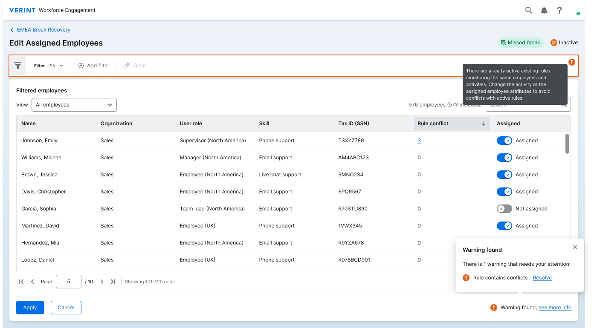
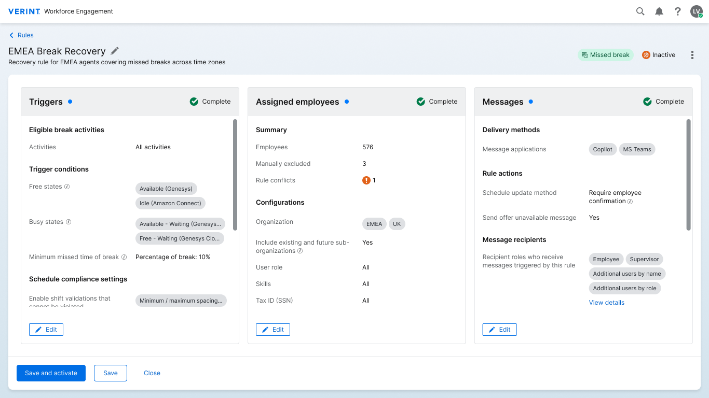
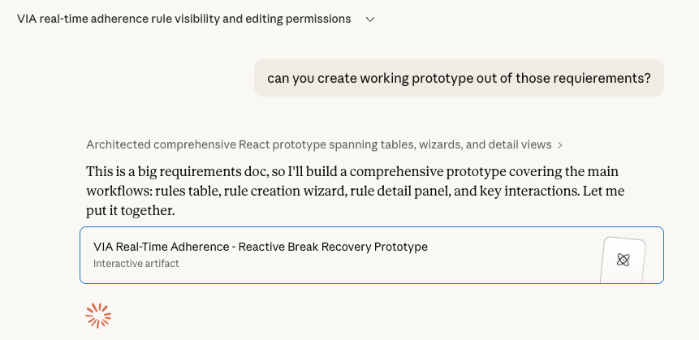
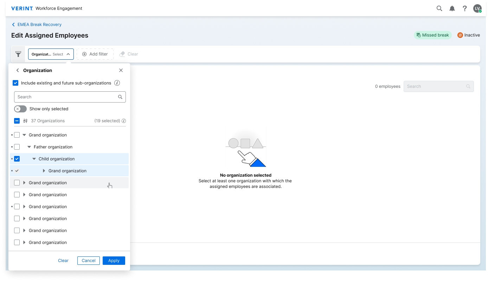
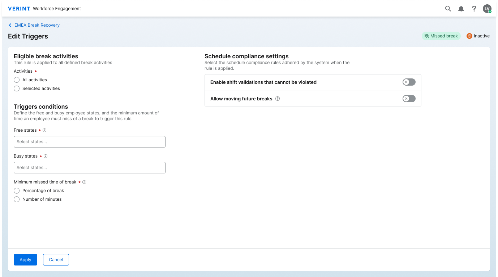
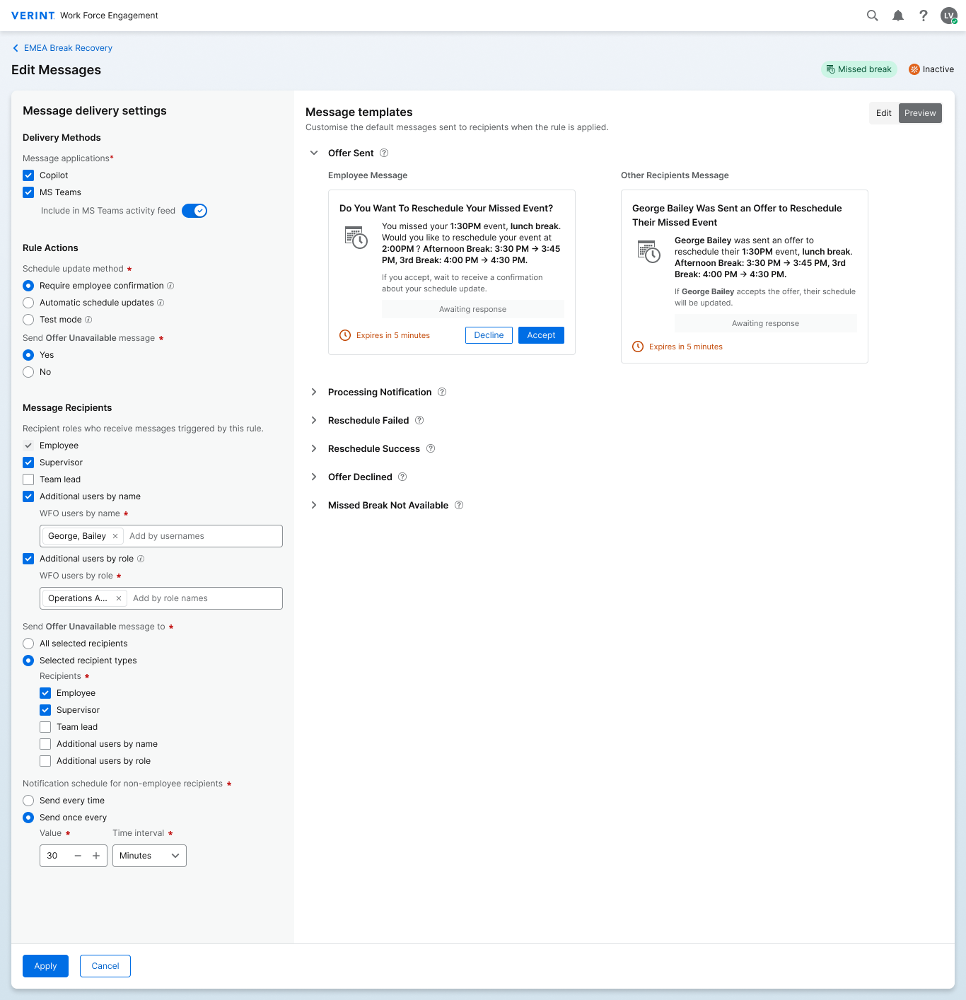

Overview
Verint's first product to work in real time
Workforce management tools have always been about planning. You design the schedule in advance, assign breaks, map activities, and send agents to their stations. But real life rarely follows the plan. Agents miss breaks. Queues spike. Shifts need extending. Until VIA, Verint had no answer for what happens during the day, when things go off-script.
VIA is Verint's first step into real-time WFM. It detects intraday events as they happen and triggers automated responses: reassigning a break, offering a shift extension, pulling an agent into an urgent activity. In many cases, the manager doesn't need to do anything at all. The system handles it quietly, and alerts the manager only when human judgment is genuinely required.
My job was to design the configuration system that makes all of this possible: the interface where WFM administrators set up the automation rules that run during the day.
My Role
End-to-end design lead
I owned the full design of VIA's configuration experience, from UX flows and information architecture through to the final UI screens handed off to development. Alongside that, I collaborated with the product manager on structuring customer interview questions, and stayed involved throughout development to answer questions from the engineering team.
Design Process
Applying familiar WFM knowledge to an unfamiliar problem
Verint has deep expertise in workforce management. We understood how WFM administrators think and work. The challenge wasn't starting from zero, it was adapting that existing knowledge to a new context: real-time, where decisions happen in seconds and the stakes of getting it wrong are immediate.
01: Research
Understanding the intraday reality
We collaborated with the PM to design customer interview questions for WFM administrators. We focused on how they currently handle intraday events manually, what types of automation they'd trust to run without their approval, and where they'd always want to stay in control.
02: Scoping
Narrowing down a large space
Real-time WFM covers a wide range of scenarios. The product team defined what to build in v1, our job was to understand the scope deeply enough to design for it with intention, making deliberate choices about what to show, what to abstract, and what to leave room for in future iterations.
03: Exploration
Guided 6-up concepts to explore directions
Once I had a strong enough grasp of the requirements, I wrote detailed instructions for Claude and guided it to generate 6-up layout variations, different ways the configuration interface could be structured. I evaluated the options and chose a direction, using Claude as a brainstorming partner throughout.
04: Concept approval
Aligning on direction before going deep
Before committing to detailed design, I presented the chosen concept direction to the PM for review and sign-off. This alignment step made sure we were both confident in the structural approach before investing time in screen-level detail and edge cases.
05: Detailed design
Screen by screen, edge case by edge case
With a clear direction approved, I moved into detailed design, mapping every screen, state, and edge case. A key challenge emerged mid-way: a hidden dependency between two configuration cards that required rethinking the validation model entirely. Full details in Challenge 02 below.
06: Dev collaboration
Staying involved through build and launch
After handoff I stayed closely involved, answering engineering questions, reviewing implemented screens, and iterating as new issues surfaced. Changes came from multiple directions: customer feedback, accessibility issues discovered during implementation, and technical constraints raised by the dev team.
Challenges
The hard problems we solved
Challenge 01
A brand-new product space with far more to build than we could tackle at once
VIA had no internal reference point. Unlike redesigning an existing tool, we were defining a new product category for Verint. The real-time WFM space had many valid directions: missed breaks, shift extensions, overtime handling, proactive re-scheduling, manager notifications. All of it was in scope. None of it was prioritized.
The design risk wasn't making something complex. It was making something unfocused - trying to serve every scenario and ending up with a product that served none of them well.
How we solved it
The rules library
Challenge 02
A dependency that wasn't in the spec when we designed the structure
The core structural question in designing the rule creation flow was: wizard or summary cards? A wizard enforces completion order and validates inline. Summary cards show all parameters at once, let admins fill them in any sequence, and give an at-a-glance view of the full rule. For expert WFM users configuring many rules daily, summary cards were the clear choice.
At the time we made the structural decision, the parameters were defined as independent. The requirements supported it, and the design was built on that foundation.
Considered
Wizard, step-by-step flow
- Forces completion order
- Validates each step inline
- Hides full picture until the end
- Feels slow for expert users
✓ Chosen
Summary cards, all parameters at once
- Full rule visible at a glance
- Fill in any order
- Faster for experienced admins
- Each card deep-dives independently
Mid-process, the requirements changed
A new product requirement introduced a dependency between the Activity and Organization parameters. This combination hadn't existed when we made the structural decision. We weren't working with incomplete information; we had specifically checked. The spec changed underneath us, and now the design had to absorb it.
We loved the summary card model too much to walk it back. The advantages for expert users were real, and the rest of the design was working well. Rather than restructure the entire flow, we looked for a way to handle the new constraint without losing what made the model right.
The conflict state in the UI

How we solved it
Summary cards - rule configuration

Challenge 03
A spec too long and too inconsistent to hold in your head
The product requirements for VIA spanned five documents covering scenarios, personas, edge cases, and business rules. The scale of it was the first problem. As you can see in the picture below, they were too long even for Claude to process in one go.
On top of the length, some terms were used inconsistently across documents. The same concept appeared under slightly different names in different places, which made it genuinely hard to understand how things connected. Reading linearly and hoping to retain it all wasn't a viable approach.
How I worked through it
Requirements so long, even Claude couldn't fit them in one context

Design depth
Every card opens into its own complex sub-screen
The summary card layout looks simple from the outside. What it hides is that each card — Triggers, Employees, Messages — opens into a detailed configuration screen with its own logic, edge cases, and states. The Messages card alone covers delivery methods, rule actions, recipient roles, message templates, and variable injection.
This is where a lot of the design complexity lived: making each sub-screen feel approachable without losing the power underneath it.
Summary cards — the full rule at a glance
Assign employees

Edit triggers

Edit messages

✦ AI in the process
Claude as a thinking partner throughout
I used Claude at multiple stages of this project, not to replace thinking, but to move faster through it. Each use was intentional and hands-on: I wrote the prompts, reviewed the output critically, and directed the next step.
Understanding
Prototype from requirements to grasp the structure
Before I'd read everything, I asked Claude to build a working prototype from one document. Seeing how it interpreted the spec told me immediately which parts were clear and which were ambiguous, faster than re-reading the same pages twice. Full story in Challenge 03.
Navigation
Questions whenever I didn't know where to look
The requirements spanned five documents. Rather than scanning all of them every time I had a question, I asked Claude directly, treating it as a searchable layer over the spec. It saved significant time and let me stay focused on design decisions instead of document hunting.
Exploration
Guided 6-up variations of the concept
Once I had a clear enough picture, I wrote detailed instructions and guided Claude to generate layout variations of the configuration interface. I evaluated the options, chose a direction, and continued the conversation from there, using it like a fast sketchpad for structured ideas.
Iteration
Brainstorming complex screens in real time
For screens that were technically complex or had many states, I iterated directly with Claude, describing the problem, reviewing a version, refining the prompt, and repeating. It's a powerful tool for getting unstuck quickly on hard UI problems.